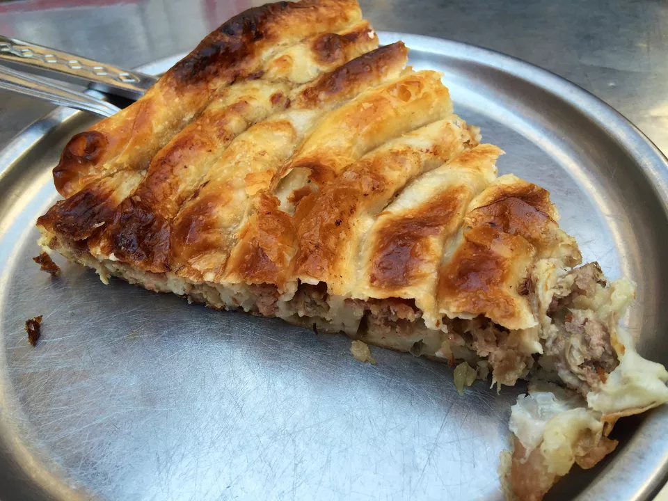
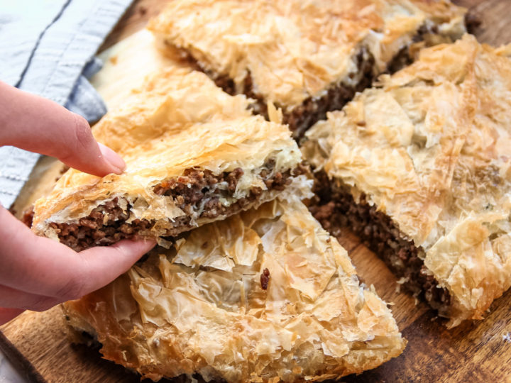

Burek
General Information
Burek is a traditional food in Southeastern Europe. Originally it comes from the Ottoman Empire and has spread all over the Balkan peninsula. It has different versions amongst all of the Balkan countries, however the most popular version contains contains ground beef.
The traditional recipe for burek is made with dough and ground beef (or a combination of beef, pork, and lamb) in a circular pan. The final product is usually divided into "quarters" or "eights" which is considered as a normal dose. It is one of the most popular breakfast foods on the Balkan. To read more, click here.
- Total time: 75 mins
- Prep: 30 mins
- Cook: 45 mins
- Servings: 8 to 10



Ingredients
- 1 cup finely chopped onion
- 1 1/2 pounds ground beef chuck or a combination of beef, pork, and lamb
- 1 cup chopped parsley
- 1 tablespoon salt
- 1/2 teaspoon pepper (or to taste)
- 5 tablespoons vegetable, sunflower or pumpkin seed oil
- 1 (1-pound) package thawed #7 filo dough
- 6 large beaten eggs
- 1 1/2 cups yogurt
- 1 1/2 cups soda water
Steps to Make It
- In a large skillet, saute onion and ground chuck until meat is no longer pink and the onions are translucent. Drain in a colander. Return meat-onion mixture to skillet and add parsley, salt, and pepper, and cook for 1 minute, mixing thoroughly. Remove from heat and let cool to room temperature.
- Lightly coat a 9" x 13" pan with cooking spray. Separate filo dough into two piles (about 14 sheets each) and keep covered so they don't dry out. Half will go on the bottom of the pie and half will go on the top.
- Place 2 sheets in prepared pan and brush lightly with oil, folding in any overhanging edges. Add 2 more and brush with oil. Continue until you've used one pile of filo.
- Spread the cooled ground chuck mixture evenly over the filo and to the ends. Begin covering the meat with the remaining filo, again using 2 sheets at a time and brushing with oil.
- Brush entire top lightly with oil. Using a serrated knife and a sawing motion, cut burek all the way to the bottom into 12 squares.
- In a medium bowl, mix eggs with yogurt and soda water. Pour over burek. Cover with plastic wrap and refrigerate 2 hours. Pre-heat oven to 350 F. Bake 45 minutes or until golden brown. Cool slightly before serving.
- This makes a great luncheon course, entree or appetizer and freezes well cooked or uncooked.